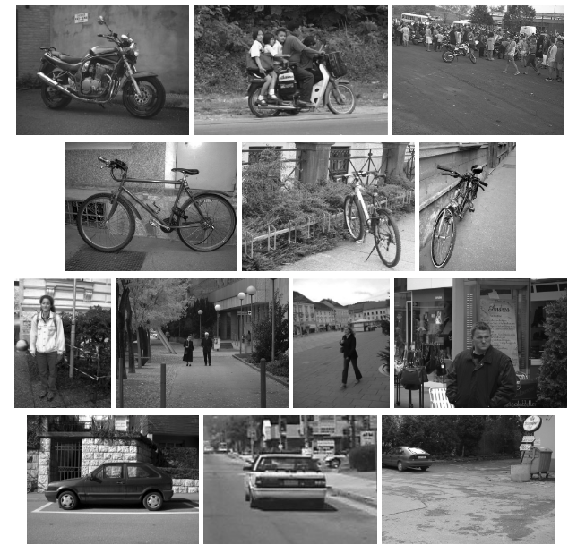
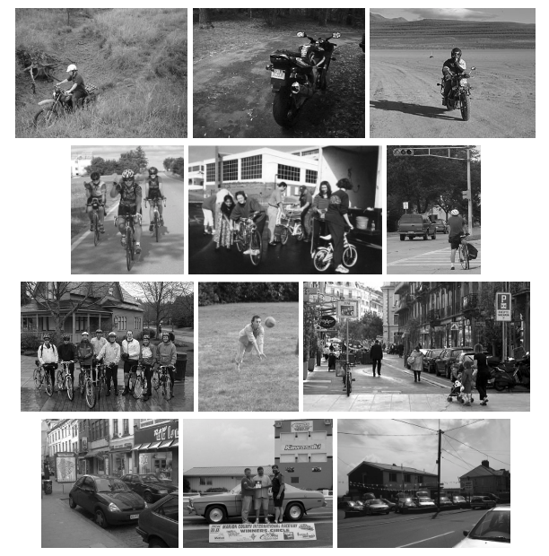

| Year | Statistics | New developments | Notes |
|---|---|---|---|
| 2005 |
|
|
|
| 2006 |
| 图片来自Flickr和Microsoft Research Cambridge（MSRC）数据集 |
|
| 2007 |
|
数量统计（107 代表图片数量，109 代表物体数量，其他同理）
| 类别 | train | val | test1 | test2 |
|---|---|---|---|---|
| 摩托 | 107、109 | 107、108 | 216、220 | 179、202 |
| 自行车 | 57、63 | 57、60 | 114、123 | 241、342 |
| 人 | 42、81 | 42、71 | 84、149 | 441、874 |
| 车 | 136、159 | 131、161 | 275、341 | 211、295 |

7. test2 举例
8. 本章其余部分的结构如下。第2节描述了为挑战定义的各种比赛。第3节描述了为挑战赛参与者提供的培训和测试数据集。第4节定义了挑战赛的分类竞赛和评估方法，并讨论了用于分类的方法参与者的类型。第5节定义了挑战的检测竞争和评估方法，并讨论了用于检测的方法参与者的类型。第6节介绍了参与者提供的方法。第7节展示了分类竞赛的结果，第8节展示了检测竞赛的结果。第9节最后讨论了挑战结果、挑战研讨会参与者提出的挑战的各个方面以及未来挑战的前景。挑战目标
挑战设置
参赛方法
结果
讨论
总结
PASCAL VOC 2005 物体识别挑战推动了物体识别领域的研究，并展示了各种方法的性能和局限性。未来挑战可以进一步改进数据集、评估方法和竞赛设置，以推动该领域的发展。